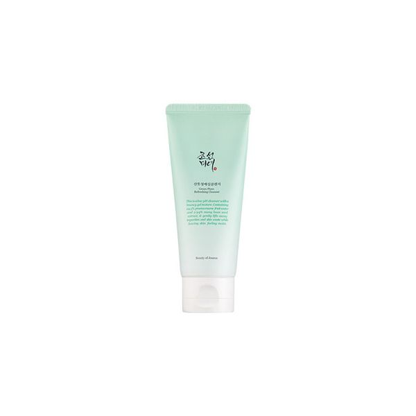
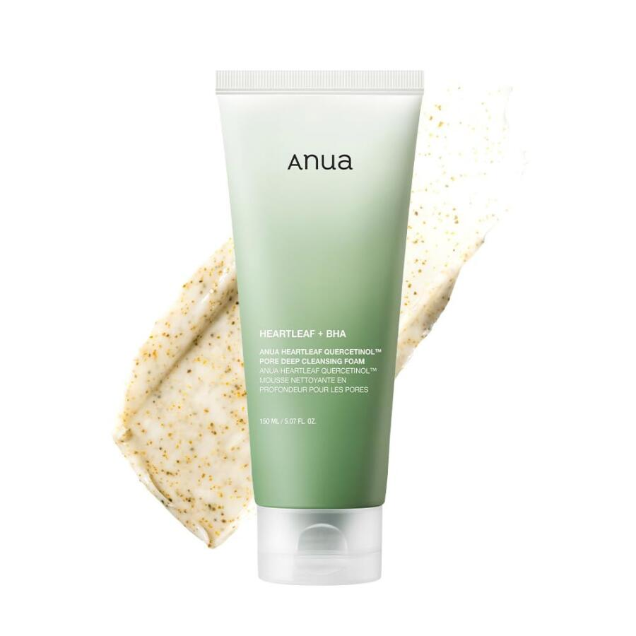
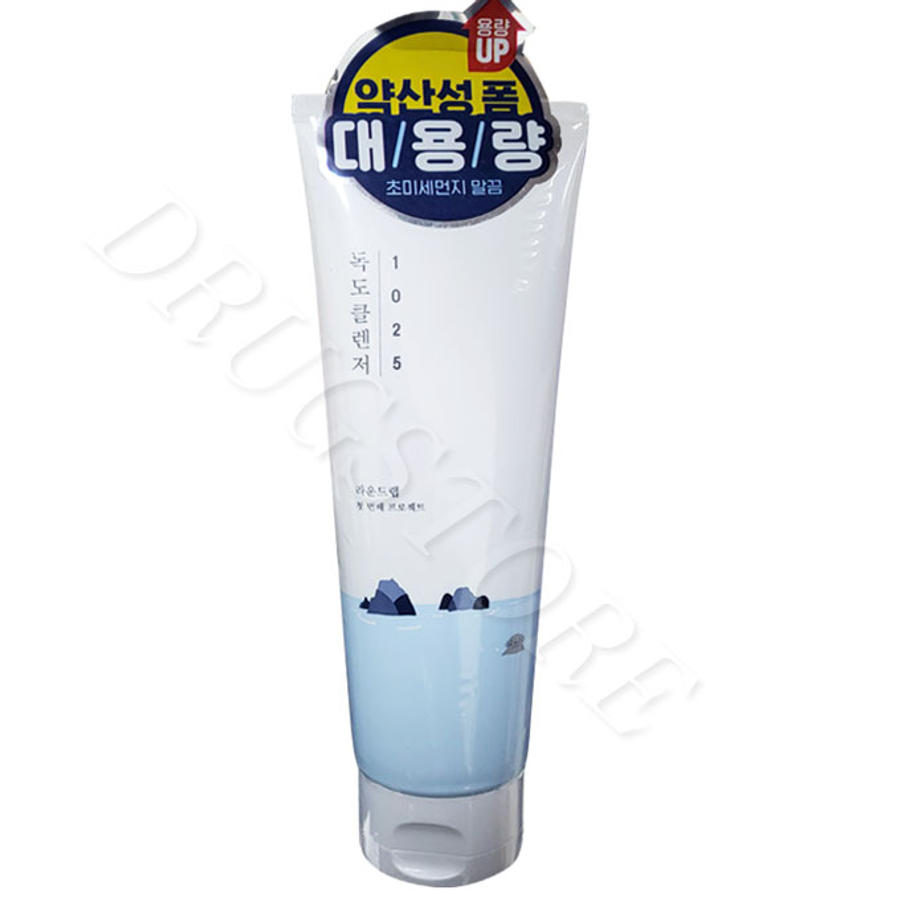
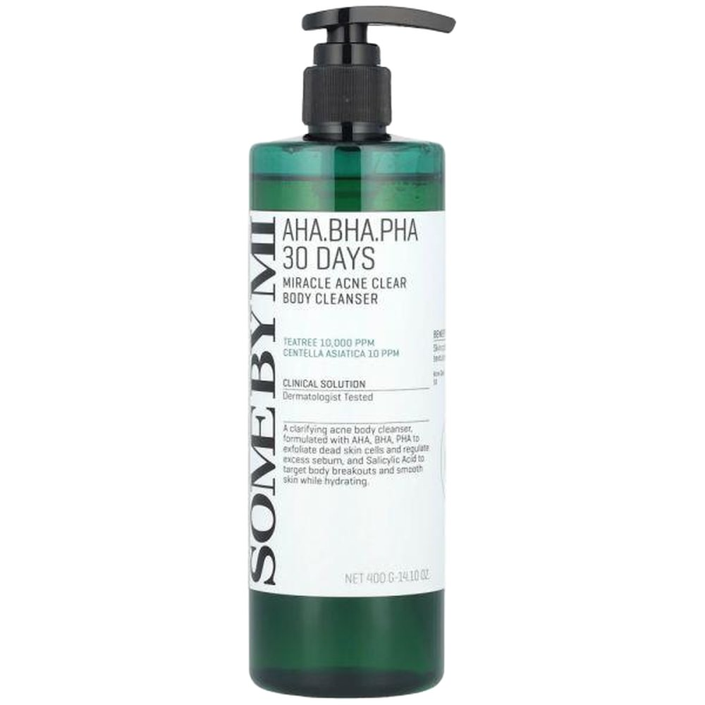
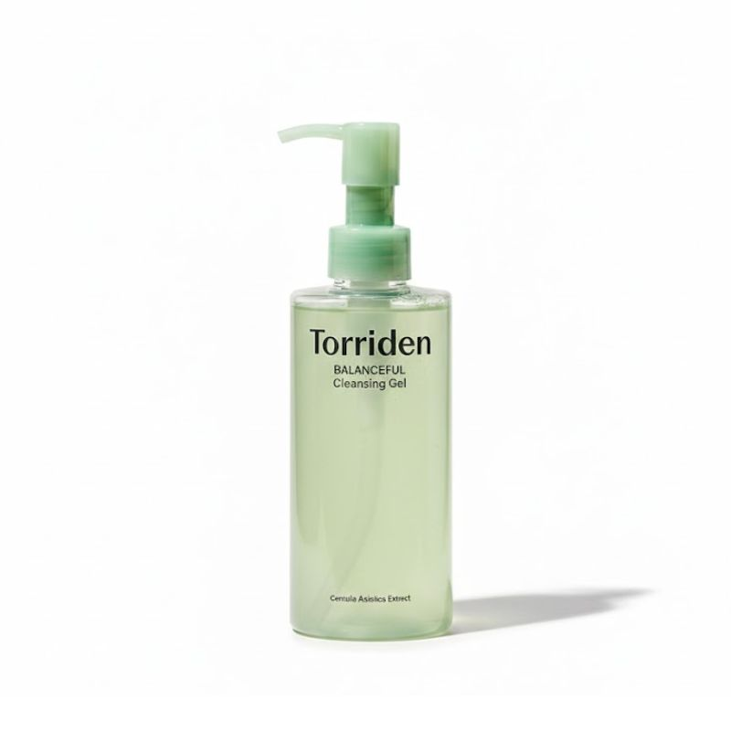

Home › Korean Cleanser
6 Best Korean Cleansers for Glass Skin (2026)
The Korean cleansers that never strip
I rounded up 6 Korean cleanser worth knowing — the ones K-beauty fans keep coming back to. Real products, honest notes, and roughly what they cost. Prices are approximate; check the retailer for today's price.
| # | Product | Price | |
|---|---|---|---|
| 1 | COSRX Low pH Good Morning Gel Cleanser Top pick Best value | ≈ $13.0 | Buy → |
| 2 | Beauty of Joseon Green Plum Refreshing Cleanser | ≈ $14.0 | Buy → |
| 3 | Anua Heartleaf Quercetinol Pore Deep Cleansing Foam | ≈ $16.0 | Buy → |
| 4 | Round Lab 1025 Dokdo Cleanser | ≈ $16.0 | Buy → |
| 5 | Some By Mi AHA BHA PHA 30 Days Miracle Cleanser | ≈ $15.0 | Buy → |
| 6 | Torriden Balanceful Cica Cleansing Foam | ≈ $14.0 | Buy → |

Low pH Good Morning Gel Cleanser
Gentle low-pH gel cleanser for daily use.
A low-pH gel cleanser that cleans without stripping, thanks to tea tree and BHA. A classic gentle daily cleanser for most skin types.
≈ $13.0 (approx) · Ships worldwide
Check price on Amazon →
Green Plum Refreshing Cleanser
Mildly exfoliating gel that never strips.
A green-plum gel cleanser with a mild AHA touch that refreshes without tightness. Leaves skin clean and comfortable, not squeaky.
≈ $14.0 (approx) · Ships worldwide
Check price on Amazon →
Heartleaf Quercetinol Pore Deep Cleansing Foam
Deep-cleansing foam that stays gentle.
A heartleaf foam that deep-cleans pores while staying gentle enough for daily use. A good second cleanse for oily and combination skin.
≈ $16.0 (approx) · Ships worldwide
Check price on Amazon →
1025 Dokdo Cleanser
Creamy low-pH cleanser for soft skin.
A creamy, low-pH cleanser that rinses clean and leaves skin soft. A calm choice for normal to dry skin.
≈ $16.0 (approx) · Ships worldwide
Check price on Amazon →
AHA BHA PHA 30 Days Miracle Cleanser
Exfoliating cleanser for congested skin.
A gently exfoliating cleanser with AHA/BHA/PHA and tea tree for congested, breakout-prone skin. Best as part of an evening routine.
≈ $15.0 (approx) · Ships worldwide
Check price on Amazon →
Balanceful Cica Cleansing Foam
Soothing cica foam for a calm finish.
A cica foam that soothes while it cleanses for a calm, non-tight finish. Suits sensitive skin that reacts to stronger cleansers.
≈ $14.0 (approx) · Ships worldwide
Check price on Amazon →Save this for your next K-beauty haul
Prices are approximate and pulled from public shopping data; always check the retailer for the current price and shade/size before buying.